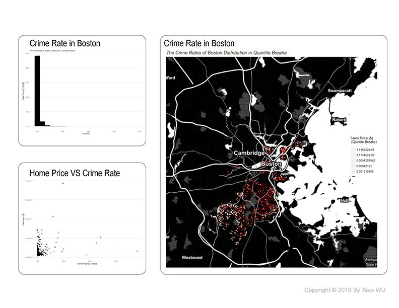

Hedonic Home Price Prediction
In this project, we would predict the home price in Boston for Zillow based on the open data we could find from various websites, for instance, Analyze Boston and Harvard World Map. The primary purpose of this project is to use ordinary least squares (OLS) regression to predict the test Boston home sale price as close as possible.
Home sale price prediction is important because of its close relation to real estate development, but also people’s daily lives, and the economic growth in the real world. But it’s also hard to predict because the price is not only related to the internal characteristics of the house itself but also its distance to amenities and public services. And more importantly, there might also be underlying spatial structures of prices that need to be discovered.
In this project, the difficulties lie in finding the best predictive variables, adjusting the correct predictive power without over fitting, and to make it generalizable to most of the neighborhoods in Boston. Besides, the underlying spatial structure of the prices is hard to find out because it might change according to time. And the planning divisions or census tracts might not be the best partition for spatial structures.
The overall modeling strategy would be firstly finding as many predictors as possible. Then try to build up possible linear regressions, compare the goodness of fit and test their generalization through applying them to neighborhoods with different levels of economic development. We finally found out that the sales price is not only related to the internal characteristics itself, but also the houses’ distance to open spaces, landmark, schools, universities and etc. The spatial cross-validation results also show similar percentage mean absolute error (MAPE), therefore the prediction is generalizable to neighborhoods in Boston.
This project will have great practicality in the real world because of its capability of taking various phenomena that has relation to home sale prices into consideration and also provide a more profound insight into the sale price and its related predictors. This way of prediction could also be helpful in other problems in the real world.